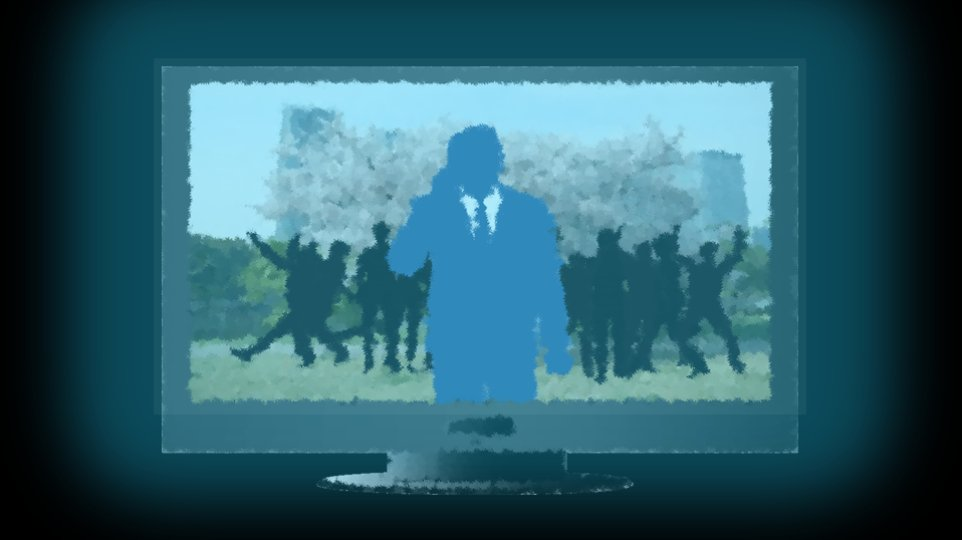

Script 000003A8

This is a live report from Motoki-cho Central Park, where the brutal killing took place.
As of yet, the police have released nothing on the condition of the body, the cause of death, or other details.
According to eyewitnesses, although it had a human shape, it was in such a gruesome state that one could not tell whether it was human.
As of yet, the police have released nothing on the condition of the body, the cause of death, or other details.
According to eyewitnesses, although it had a human shape, it was in such a gruesome state that one could not tell whether it was human.
As you can see, many people have gathered, hoping to catch a glimpse of the scene where this tragic incident occurred.
Now, we would like to hear from some of those people.
Now, we would like to hear from some of those people.
―Excuse me, I'm with Sawa Broadcasting...
"Oh! An interview!? An interview!? Yeaaah! Mom, you watching!?"
―Ah... um, are you high school students?
"We're peppy high schoolers! Is this going nationwide!?"
"Oh! An interview!? An interview!? Yeaaah! Mom, you watching!?"
―Ah... um, are you high school students?
"We're peppy high schoolers! Is this going nationwide!?"
―Ah... uh...
As you can see, the scene is surrounded by residents who heard about the incident, which shows the high level of interest.
"Everybody in the whole country, Motoki-cho says nice to meet youuu!"
―Uh... As you can see, all the schools in the vicinity are closed, and... H-hey... ow, ow... Uh, the scene is, as you can see
"Everybody in the whole country, Motoki-cho says nice to meet youuu!"
―Uh... As you can see, all the schools in the vicinity are closed, and... H-hey... ow, ow... Uh, the scene is, as you can see
"Yeaaah!"
"The cherry blossoms are in full bloom!"
"The murder's seriously scary!"
―As you can see... H-hey... ―Stop... ow...!
Um... Uh, with the Megasawa City murders that have been occurring every few years... H-hey... any connection to the Megasawa City murders is...
"The cherry blossoms are in full bloom!"
"The murder's seriously scary!"
―As you can see... H-hey... ―Stop... ow...!
Um... Uh, with the Megasawa City murders that have been occurring every few years... H-hey... any connection to the Megasawa City murders is...
"Oh! This announcer's a celebrity! Handshake, handshake!"
"Nationwide broadcast, whoooo!!"
"Grandpa, Grandma, I'm doing great!"
―H-hey, wait! Ow! Uh, as you can see Ow, ow, ow, ow!
"Nationwide broadcast, whoooo!!"
"Grandpa, Grandma, I'm doing great!"
―H-hey, wait! Ow! Uh, as you can see Ow, ow, ow, ow!
―Um... it seems things are quite chaotic at the scene of the live report.